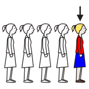
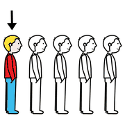
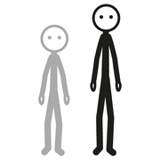
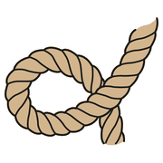
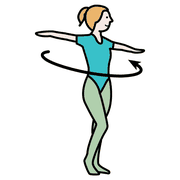
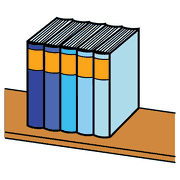
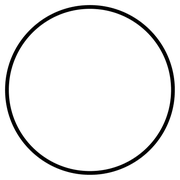

Dai giochi ai concetti, modulo 10
Relazioni e invarianti
Ordinare, confrontare, accorgersi di ciò che resta uguale mentre tutto cambia: è il cuore del pensiero matematico.
transitività
vissuta
Relazioni d'ordine

primo
ultimo
grande piccolo
piccolo«Più alto di», «arrivato prima di», «più vicino a»: le relazioni d'ordine nascono nei giochi di gara e di fila. Il bambino scopre che se Ada è più alta di Bea e Bea più alta di Carlo, allora Ada è più alta di Carlo, anche senza metterli vicini.
Corrispondenze dinamiche
 compagno
compagno cambiare
cambiare gruppo
gruppoIn movimento le corrispondenze cambiano continuamente: ogni bambino ha un compagno, ma i compagni si scambiano; ogni squadra ha una base, ma le basi ruotano. Seguire questi cambi allena a tenere sotto controllo più relazioni insieme.
la domanda
chiave
Che cosa resta uguale
 uguale
uguale
corda
girareUn'idea matematica diventa solida quando il bambino riconosce che cosa non cambia dopo una trasformazione:
- la quantità non cambia se sposto gli oggetti;
- la lunghezza della corda non cambia se la arrotolo;
- il davanti non cambia se giro la testa.
attività
Un'attività

fila
cerchio disegnare
disegnareLa fila che si trasforma
Primaria
- Otto bambini in fila per altezza.
- La fila si allarga, si stringe, diventa un cerchio.
- Domanda: sono ancora otto? L'ordine è lo stesso? Da dove parte il cerchio?
- Si rappresenta ogni trasformazione con un disegno e si confrontano i disegni.
Obiettivo
Riconoscere l'invariante della quantità e dell'ordine.
Domande per riflettere
- Che cosa è cambiato e che cosa no?
- Il cerchio ha un primo e un ultimo?